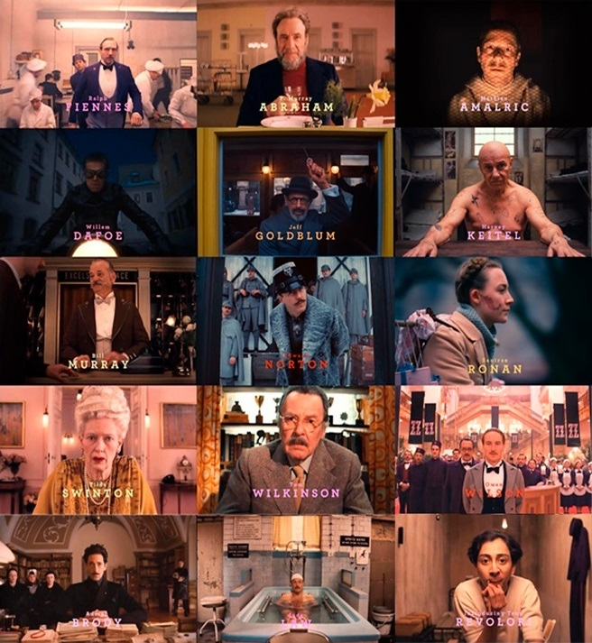

Elenco
1. Ralph Fiennes como M. Gustave H., el legendario conserje del Grand Budapest Hotel.
2. F. Murray Abraham como el Sr. Moustafa, el anciano propietario del Grand Budapest Hotel que relata la historia en retrospectiva.
3. Mathieu Amalric como Serge X, el mayordomo de la señora D, la única persona que puede darle a Gustave.
4. Adrien Brody como Dmitri Desgoffe und Taxis, el villano principal y heredero de la fortuna de la familia Desgoffe und Taxis.